Shooting Stars Guide
Introduction
Shooting stars are one of the main features of 2009scape as it came out in 2008. It is exclusive to this version of the game as Rs3 has changed some aspects of it. The Osrs version of this is nothing like how it was so do not base it off of Osrs.
Getting Started
When you first login to 2009scape you should get an announcement of what tier star has fallen and where it has fallen. This is a QoL update which was given to try and get more players to do them rather than own a telescope in your house. Once you see the announcement you go and head over to the location. The first person to find the star gets a chunk of xp that is scaled on your level.
Below you can find a table for each star's level, the experience given per stardust mined, the level requirement, the total amount of stardust that level contains, and that level's chance at rewarding a player with an ancient blueprint each time they mine some stardust
Ancient Blueprints are found to make Ring of Starsprites.
| Tier |
Level |
Exp/Dust |
Stardust |
Blueprint Chances |
| 1 | 10 | 14 | 1200 | 1/10000 |
| 2 | 20 | 25 | 700 | 1/5000 |
| 3 | 30 | 29 | 439 | 1/4000 |
| 4 | 40 | 32 | 250 | 1/3000 |
| 5 | 50 | 47 | 175 | 1/2000 |
| 6 | 60 | 71 | 80 | 1/1000 |
| 7 | 70 | 114 | 40 | 1/750 |
| 8 | 80 | 145 | 25 | 1/500 |
| 9 | 90 | 210 | 15 | 1/250 |
Starsprite Bots
2009scape has starsprite bots that will come help a player mine when the rock is unpopulated. The fantastic part of this feature is while it benefits the live server, it makes it possible to do high level rocks on Singleplayer mode. If There will only be a maximum of three bots at a rock. For each player added a bot leaves. So four players would mean no bots would come down to one player with three bots. It is random to when they come but the rules for them are that.
Locations
Below is a list of all the possible locations that the star can fall to
| Name |
Location |
Fastest way of Travel |
World Map Location |
| Al Kharid Mine | Right inside the mine surrounded my scorpion | Gnome glider or ring of dueling | |
| Duel Arena bank chest | At the Duel Arena west of the hospital area and south of the entrance to the Mage Training Arena. | Ring of Dueling |  |
| Al Kharid Bank | Can be found close to the Al Kharid bank | Ring of Dueling | |
| Rimmington Mining Site | Can be found in the center of the Rimmington Mining site. | House Teleport ( If your house is in Rimmington ) | 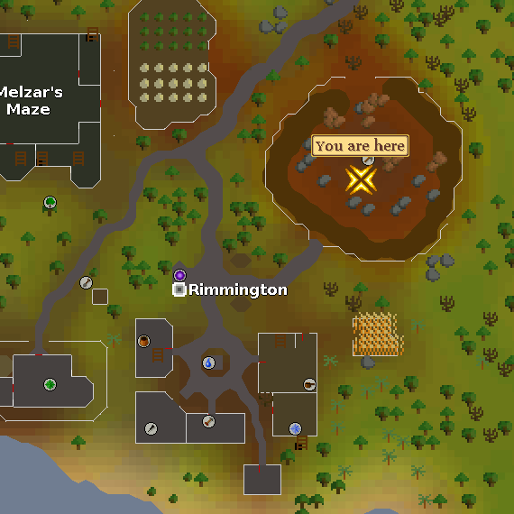 |
| Crafting Guild | Can be found in the mining area in the Crafting Guild. | House Teleport ( If your house is in Rimmington ) | 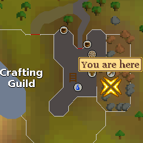 |
| East Falador Bank | Can be found right next to the mining guild right next to the East Falador bank. | Falador Teleport |  |
| Nardah | Can be found next to the Nardah bank. | Rug Travel. | 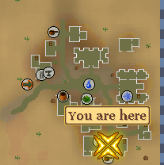 |
| Nardah Mining Spot | Can be found near the vulture spot and agility pyramid. | Rug Travel. | 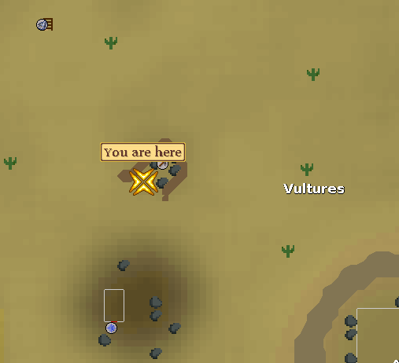 |
| Varrock East Mine | Can be found at the mining spot to the east. | Varrock Teleport, Canoe | 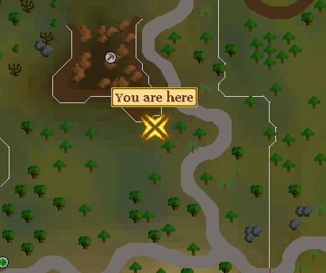 |
| Champions Guild | Can be found at the mining spot to the west. | Varrock Teleport | 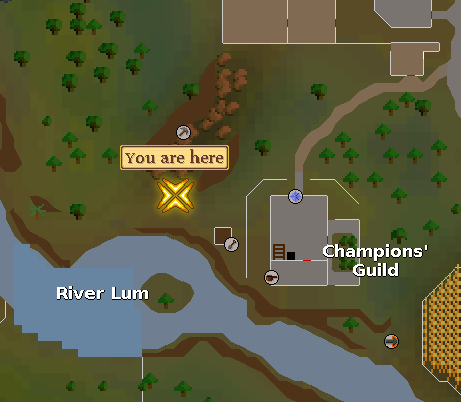 |
| Lumbridge Swamp | Located next to the mining tutor in Lumbridge Swamp. | Home teleport, Lumbridge teleport | 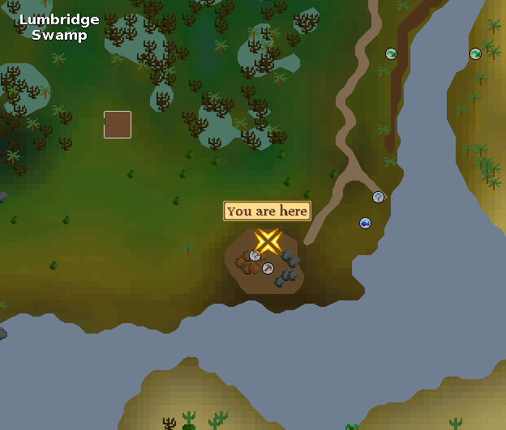 |
| Kamaja Gold mine | Can be found near the gold ore rocks where the scorpions roam. | House teleport ( If your house is in Brimhaven ) | 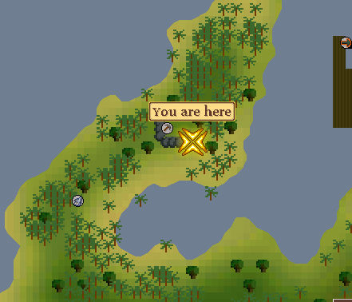 |
| Brimhaven Mining Spot | Can be found next to the Brimhaven dungeon entrance. | House teleport ( If your house is in Brimhaven ) | 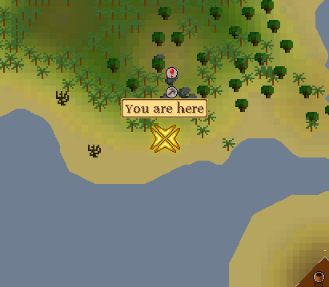 |
| Tai Bwo Wannai Mining Spot | Can be found near the mining spot in tai bwo wannai. | Spirit Graahk Teleport | 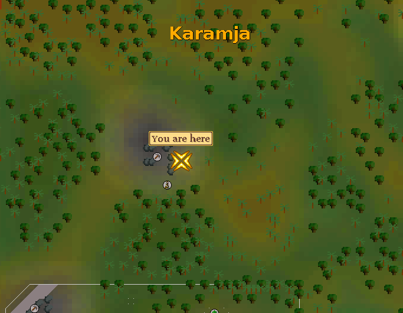 |
| Shilo mining spot | Located next to the gems mine in Shilo Village | House teleport ( if in brimhaven ) use cart to shilo. | 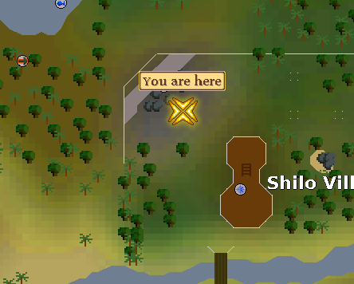 |
| Crandor | It does require the completion of Dragon Slayer so use the boat to crandor. | 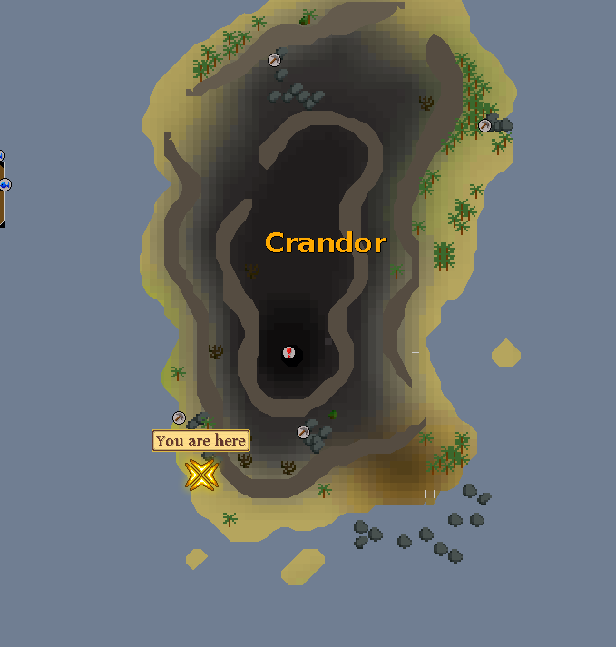 | |
| Monastery | Can be found by the rocks next to the Monastery. | Spirit Tree, Ardy teleport | 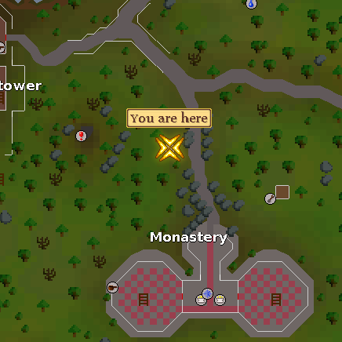 |
| Canifis Bank | Located near the werewolves and bank in Canifis. | Fairy Rings, Charter | 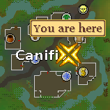 |
| North Edgeville | Located next mining spot with skeletons in low level wild. | Amulet of Glory, Canoe | 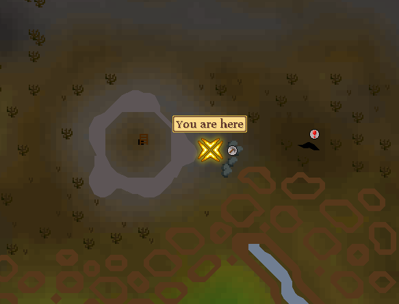 |
| Dark Warrior's Fortress | Can be found at the mining spot not too far from the North Edgeville spot but south of the Dark Warrior's. | House teleport ( If your house is in Brimhaven ) | 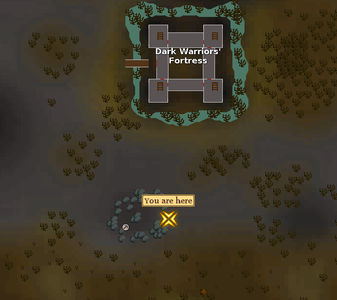 |
| Lava Maze | Can be found next to two runite ores in the Lava Mine. | Ancients? | 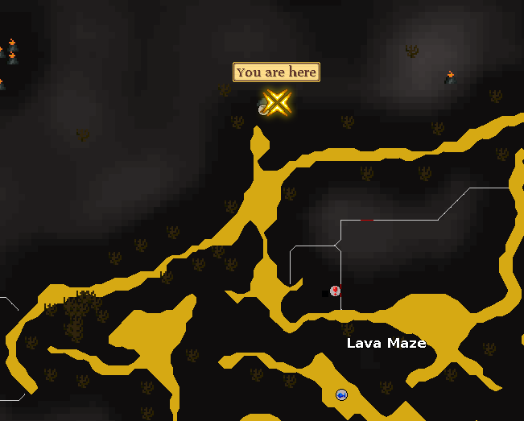 |
| Mage Arena | Can be found near the mage arena, beware of chaos elementals and revs. | Ardy Lever after teleporting to Ardy. | 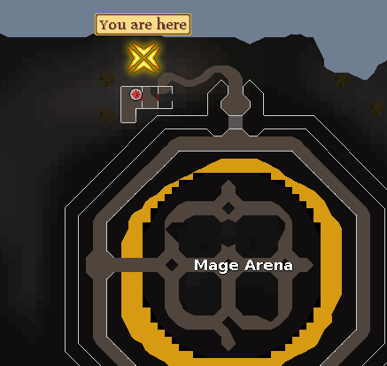 |
| Pirate's Hide Out | Can be found at the mining spot close by to the mage arena as well. | Ardy Lever after teleporting to Ardy. | 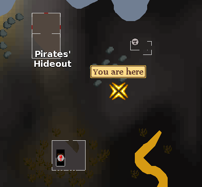 |
| Gnome Stronghold | Can be found next to gnome agility course. | spirit tree | 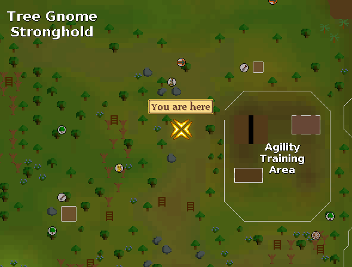 |
Note: If you see something not on this page that currently is in-game please let Summer know.